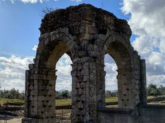

PRESENTACIÓN
El contenido de este sitio Web, consta de varias secciones y partes en las que se encuentra dividido el contenido del portal.
En primer lugar disponemos de la barra del menú de navegación, esta nos permite acceso a las diversas partes del contenido de nuestro portal Web. Si empezamos de primeras por el principio, al
abrir el portal nos encontramos con varias imágenes tomadas del municipio de Santibáñez el Bajo
, como también la comarca y pueblos cercanos dentro de la región llamada Tierras de la Granadilla
. Según
nos vamos adentrando dentro de los distintos menús, se puede observar como navegaremos por las diferentes categorías del menú.
Para empezar, cuando se carga el portal Web de primeras, se visualiza lo primero una portada dando la bienvenido al visitante de lo que va a encontrar en el interior de las páginas que componen el portal Web. En la sección de la Portada, nos encontramos un resumen de forma breve para introducirnos dentro del municipio y tener una idea de lo que se puede esperar para disfrutar del mismo.
Dentro del menú de Categorías, nos encontramos las opciones de selección de los llamados Detalles:
- Historia del lugar
- - Se explica de forma breve, su historia antigua tiempo atrás, como también su gran riqueza cultural dentro del mundo rural, sin olvidar el paso de las distintas poblaciones a través de los siglos.
- Listado de eventos
- - Se muestra un calendario con todas las festividades de ámbito local, para tener una idea de las fiestas locales que se celebran dentro del municipio y alrededores como su propia dehesa Extremeña en las cercanías del municipio.
- Gastronomía
- - La zona merece casi como una pequeña visita obligada para poder degustar los placeres culinarios de la gastronomía de la zona, probando los diversos y variados platos típicos del municipio y la zonas de alrededores.
- Lugares de interés
- - Además de visitarla por su gastronomía también merece la pena visitarla de forma turística, para apreciar su gran belleza arquitectónica, sobre todo durante la época Romana, ya que conserva varios emplazamientos de gran riqueza cultural.
- Como llegar
- - Se muestra la información para poder llegar a este municipio y sus alrededores.
Cada menú de su categoría, va enlazando con los distintos detalles de las mismas, obteniendo una mejora de la interfaz por parte del usuario del portal Web.
Tenemos la parte destinada a la Presentación, que es la parte presente que esta visualizando actualmente en esta página.
Por úlitmo tenemos el menú de Enlaces, el cual nos brinda, un listado de enlaces y accesos directos a Webs, donde se ha obtenido la mayor parte de la información, como el contenido multimedia del portal, de este portal Web.
Eugenio Blanco Fernández
. Castillo de Granadilla.

Eugenio Blanco Fernández
. Ciudad Romana de Cáparra.
Eugenio Blanco Fernández
. Puercos comiendo en la naturaleza.
Eugenio Blanco Fernández
. Arcos Romanos de Valdecañas.